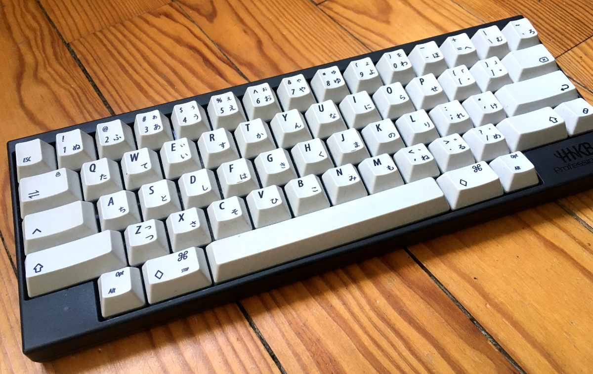

Keyboards
I use two keyboards: the Happy Hacking Keyboard (HHKB) by PFU and a Happy Hacking Keyboard plate replica made in China.
Happy Hacking Keyboard
Bought in 2016 at Akihabara in Japan, this HHKB had been my daily driver since. It took several weeks to get used to it as I learned both to write in QWERTY and the very special layout of this keyboard. It's currently customised with a japanese keyset. As for all HHKBs, the switches are Topre.
HHKB plate replica
Bought in 2018 to have a second keyboard with the HHKB layout to drop at work. This keyboard initially had a rough CNC cut plate with Outemu Purple switches. I unsoldered the switchs and replaced them with Cherry MX Silent Red. A friend also lubbed them to avoid making noise. A vinyl like sticker was then applied to the plate to hide the rough metal.